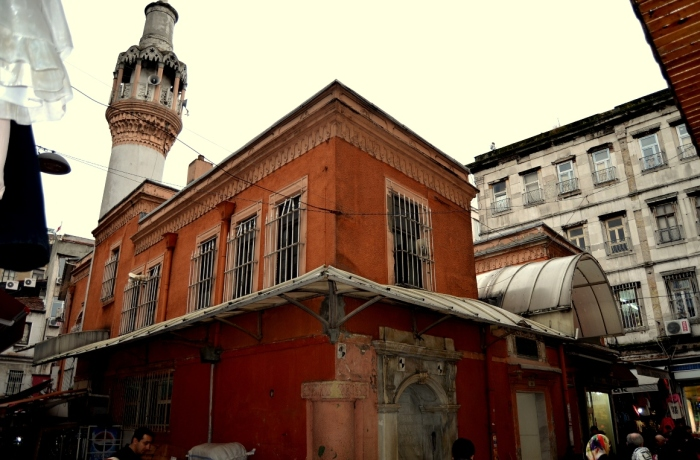
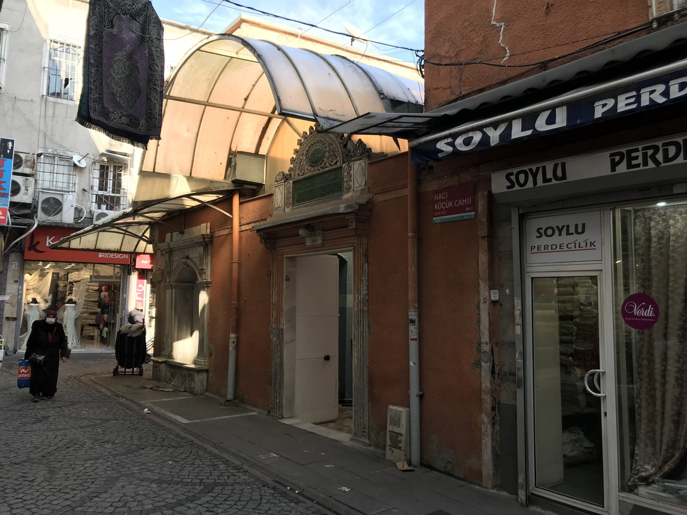
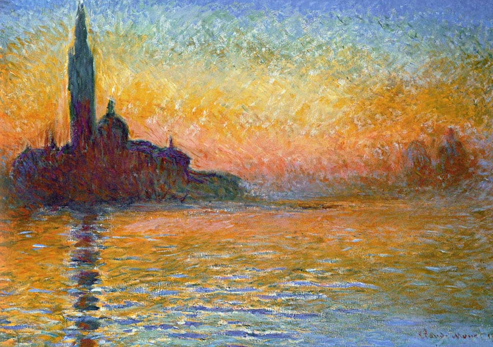

Anasayfa
SANAT TARİHİNİN DÖNEMLERİ
ÇAĞDAŞ SANAT AKIMLARI
NEDEN SANAT
Bu Web Sitesi
SANAT TARİHİNİN DÖNEMLERİ
başlığı altında
GOTİK dönemi
ve
ÇAĞDAŞ SANAT AKIMLAR
I başlığı altında
EMPRESYONİZM
'i ele alıyor.
HACI KÜÇÜK CAMİİ İSTANBUL-TÜRKİYE GOTİK MİMARİ
 
EMPRESYONİZM ESER

MERT ARABACI
E-Posta Hesabına ulaşmak için tıklayın.